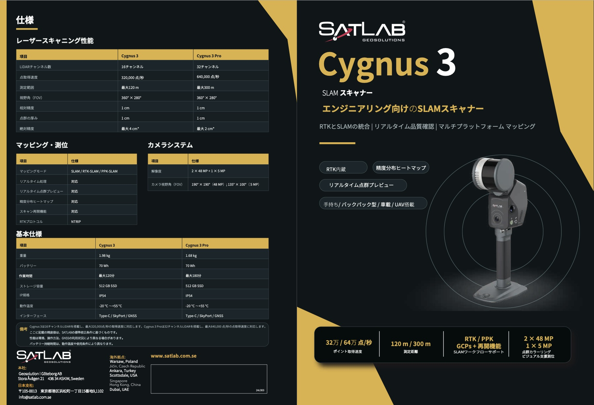

リアルタイム点群プレビュー
スキャン中に点群を確認し、現場でデータ品質を判断できます。
RTKとSLAMを統合したエンジニアリング向け3Dスキャナー。リアルタイム品質確認とマルチプラットフォーム運用で、屋内外の高精度マッピングを支援します。
Cygnus 3シリーズは、LiDAR、ビジョン、RTK測位、高度なSLAMアルゴリズムを統合し、測量、建設、インフラ点検、デジタルツイン構築に向けた3Dデータ取得をサポートします。
スキャン中に点群を確認し、現場でデータ品質を判断できます。
品質フィードバックを可視化し、再スキャンや補正判断をスムーズにします。
手持ち、バックパック、車載、UAV搭載など現場に合わせた運用に対応します。
施工現場、通路空間、産業施設、都市3Dマッピングなどの現況記録に適しています。
点群、メッシュ、3DGS、CAD/BIM参照データなど多様な成果物に展開できます。
